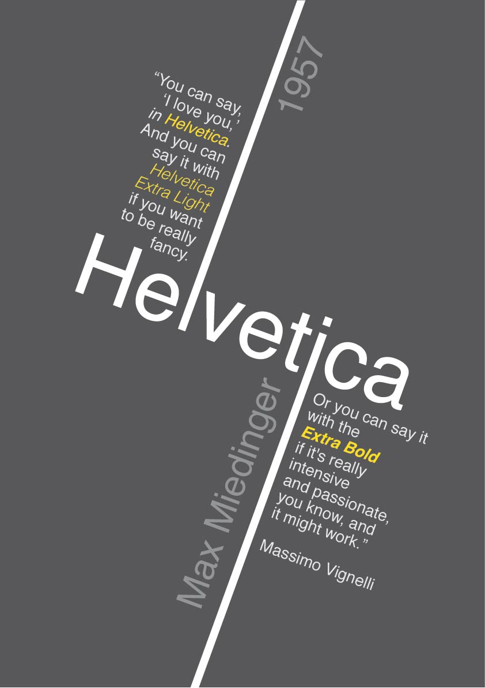

This project is an exploration of how effectively using typographic elements of design can successfully convey any messages. These components included font, size, weight, kerning, tone, use of color, and so on. Students explored these elements through a series of project, such as typeface tracing and typographic hierarchy exploration. These experiments culminated to a final poster that conveyed information about a specific typeface with only type and basic shapes.
This project is centered around the typeface “Helvetica,” created by Max Miedinger in 1957. Helvetica is a solid, bold sans-serif font with tight spacing that gives it a compact appearance. It became a popularized web typeface by brands such as Xerox, Adobe, and Apple. It is commonly used by the U.S. government and transportation systems, among others. Some of the noted characters are the narrow “t” and “f”, square “s”, bracketed top lag of “1”, rounded tail for “R”, concave stem of “7”, and a two-storied “a”.
Sketching
Starting with the sketching process, I focused a lot on just the basic elements of the “Helvetica”, “Max Miedinger”, and “1957”. I really liked the look of extending a character so that it acts as some sort of division for other elements, so it was a recurring theme throughout all my sketches. In addition, I really wanted to convey the information as simple as possible, as I felt it suited the basic, timeless nature of the Helvetica font. I redrew three of my favorite sketches and based my first digital iterations off of them.
First Digital Iteration
The first three compositions were based off my sketches, but I found that they did not really translate onto the screen the way I wanted them to. The first sketch had awkward white spacing in the middle, the second lacked focus, and the element placing in third composition also had uncomfortable spacing. For the fourth sketch, I noticed how the alternation between the regular and oblique font families in the first compositions created a cool optical illusion where the letters almost seemed like they were rippling on screen. I tried to convey that sensation by enlarging it in the last composition, and adding some horizontal lines to enhance the effect.
Out of the four, I liked the second and fourth compositions better, so those were the ones that I presented during the in class critique. There were three main points that I took away for my second composition. First, people felt that using the “l” and “i” characters as dividing lines made it hard to read “Helvetica” as a complete word, and many people instead read “He”, “vet”, and “ca” separately. Second, there was too much text on the page, and I should limit it to just the quotes or the alphabet examples. Finally, people suggested creating a clearer focus by experimenting with hierarchy. The general consensus on the fourth sketch was that the effect that I had imagined did not really translate well onto paper, so I decided to abandon that idea completely.
Second Digital Iteration
Even though I received feedback that said otherwise, I still felt like the character division could work. I felt that the main reason it was difficult to read the word “Helvetica” with the character division was because of the color difference, so I decided to keep the composition but change up the color use and element placements. With the focus on the character division, I created some iterations on two new compositions.
However, the critique I received was that separating the word into different levels, on top of the character division, emphasized the separation of characters even more. This was especially interesting to me since I did ever perceive the word in different chunks, probably because I spent so much time with the illustration. Although I really liked this composition, I decided to go in the direction of the second composition because it was stronger.
In the previous compositions, I felt just using horizontal or vertical alignment was too static, so I wanted to play more with angles and slants to create movement. I really focused on hierarchy, using different values, font size, and font weight in order to show the order of information. The helvetica was the center piece on the page, so it was in the largest and boldest font. Next, I wanted the creator name and year created to be read together, so I set those to the next big font size and a shade lighter. Finally, I separated the quote into two separate chunks so it was not just one big block on the page. After these steps, I was left with the second composition. However, I felt that since the quote was focused in one area, the center was very heavy while the sides were too bare. Thus, in the third composition, I switched the location of the quote and other text. With this finalized composition, I played around with some color combinations and ultimately decided on a darker background so the “Helvetica” in white text especially popped. I also used a yellow as my accent shade to make some of the details in the quote pop more.
Third Digital Iteration
From the feedback I received at the critique, I made a number of small changes. This included using the proper quotation marks, changing the words of the quote to be the same font size since the spot color was enough of a highlight, and changing the orientation of “1957” so it read in line with the creator’s name. During the critique, I conveyed to Mackenzie a concern about how I felt the right size of the poster felt heavier, likely because the text was longer, and the creator’s name was a lot longer compared to the year. I experimented with making the creator name smaller, but I felt that it did not give me as great a sense of hierarchy as it did when it was bigger, so I did not make that change. Finally, I tried changing the line breaks for my quote. Previously, I was breaking it based on the natural pauses when you say the quote, but in this iteration I also focused on the visual aspect. Taking these two components into consideration, I was able to shrink the width of the text and make the composition more visually balanced.
Final Composition and Reflection

In the final critique, I spoke about how Helvetica as a simplistic and clear font is used a lot by the US government and transportation system. Someone pointed out that after I said that, they actually noticed how my poster seems to reflect some elements of a bus system, with the vertical lines and parallel imagery. I thought that was really interesting because that wasn’t my intention at all. In addition, Mackenzie also pointed out that Massimo Vignelli, the author of the quote I used, was actually the designer of current NYC subway layout. I also thought that connection was pretty cool. All in all, I am really satisfied with my final piece and I hope to use some of the skills I learned for the coming projects.
< return to home page